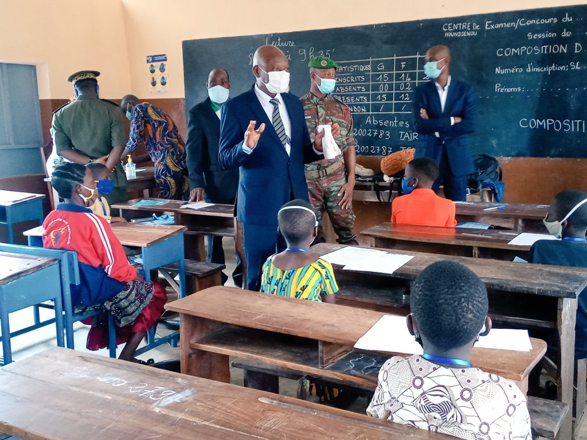

PMB
PMBSélection
Ne vient pas au Prytanée qui veut, mais qui peut
Il y a une seule façon d’intégrer le Prytanée Militaire de Bembérèkè.
après la délibération des résultats du C.E.P, les 50 premiers de chaque département sont conviés à subir les épreuves du concours d’entrée au
Prytanée Militaire de Bembérèkè. Ils composent 3 épreuves à savoir: Expression écrite, Lecture et Mathématiques.
... Lire la suite
